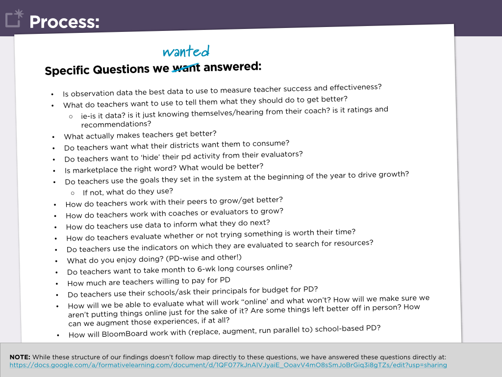
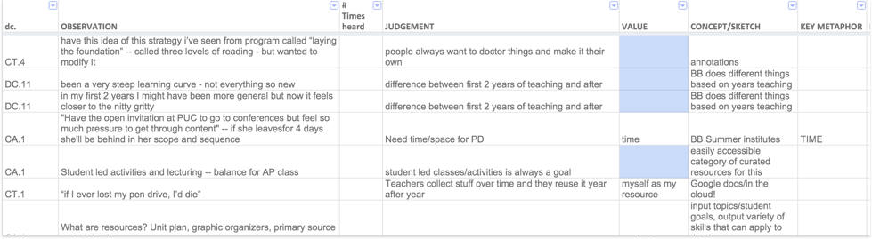
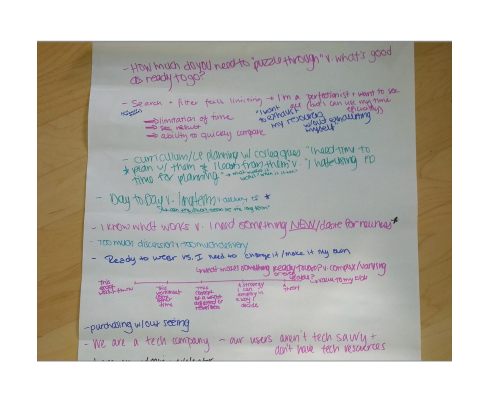
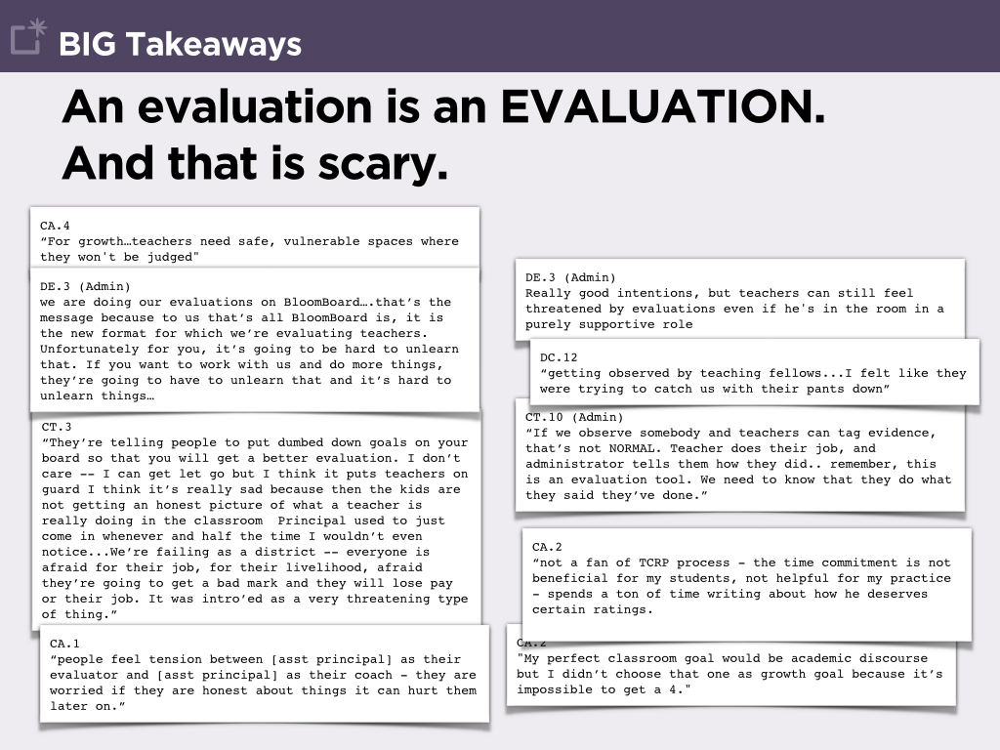

Not “what's wrong?” but “what else?”
Since our research goal was to understand what would help us turn our product into something teachers embraced, we knew that asking “what’s wrong with our product?” would limit us from looking past what we already had. We settled on the broad core question of “what do teachers do to grow?” and an informal, conversational interview format guided by a list of specific questions we wanted answered. We hoped to understand what motivates teachers to grow, what experiences and tools they seek out in order to do so, and where our product fit into that context.

We targeted both current customers and non-customers, focusing especially on teachers rather than our usual administrator-skewed research pool. In total, we interviewed 47 teachers across five states.
The Elito method
Our analysis began with synthesis using the ELITO method. The ELITO method of data analysis focuses on mapping individual pieces of raw data (a specific quote or fact from an interviewee) with an insight or judgement inferred from that observation, suggested thematic groupings, and potential responses or solutions to the judgement. We captured this data — generated from hundreds of pages of notes — in a spreadsheet we shared with the team to encourage them to come up with their own insights and themes.

Disproving assumptions; highlighting tensions
The end result was a company-wide presentation in which we shared our key takeaways. These included teachers’ preferred mechanisms for growth as well as their thoughts on many of the assumptions on which we had based our product design. We were careful to call out areas where we saw tensions between what we observed and our company goals and product strategy.

One of the most salient tensions was that between evaluations and growth; negative concerns associated with the evaluation process prevented teachers from understanding our product as a place to learn and explore. This was not something our team had previously considered, but feelings about the evaluations — ranging from fear to vitriol — were so universally expressed that our strongest recommendation to the team was to a separation of our evaluation platform from our professional development marketplace.

Product strategy changes
As a result of information we shared about the inhibiting nature of evaluations, the team embarked on a major product overhaul in which we separated the evaluation tools from the marketplace, both in location (a new URL) and in brand. Later, the same research and conclusions were referenced to create a revised product and business strategy that flipped our focus from selling an enterprise tool to creating a compelling consumer experience for teachers.